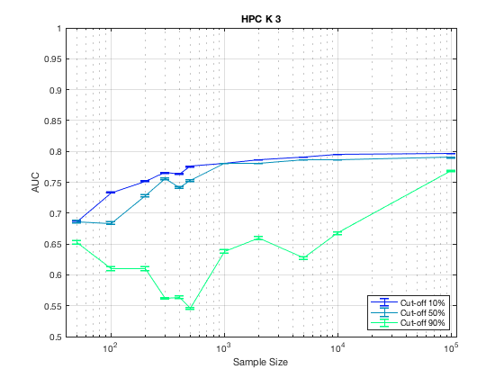
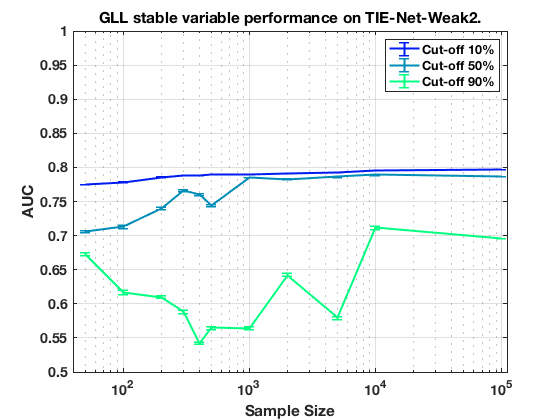

Stable Variable Experiments on ErrNet with HPC K 3.
summary_stable_vars("ErrNet", 1)
Figure 31. HPC_K_3 Model Generalizatbility.
____________________________________________

Figure 32. HPC_K_3 Feature Generalizability.
_____________________________________________

Table 166. Stability Cut Off Performance. Sample Size = 50. HPC_K_3.
_____________________________________________________________________
Stability Model_Generalizability Feature_Generalizability Number_Stable_Features Number_Non_Zero
_________ ______________________ ________________________ ______________________ _______________
'>=00%' ' 0.692 +/- 0.001 ' ' 0.775 +/- 0.001 ' ' 44.3 +/- 21.6 ' 3
'>=10%' ' 0.686 +/- 0.002 ' ' 0.775 +/- 0.001 ' ' 44.3 +/- 21.6 ' 3
'>=20%' ' 0.694 +/- 0.002 ' ' 0.742 +/- 0.002 ' ' 26.7 +/- 13.7 ' 3
'>=30%' ' 0.690 +/- 0.002 ' ' 0.721 +/- 0.002 ' ' 17.0 +/- 11.3 ' 2
'>=40%' ' 0.692 +/- 0.002 ' ' 0.721 +/- 0.002 ' ' 17.0 +/- 11.3 ' 2
'>=50%' ' 0.686 +/- 0.002 ' ' 0.705 +/- 0.002 ' ' 14.0 +/- 9.2 ' 2
'>=60%' ' 0.681 +/- 0.002 ' ' 0.703 +/- 0.002 ' ' 12.5 +/- 8.1 ' 2
'>=70%' ' 0.677 +/- 0.002 ' ' 0.687 +/- 0.002 ' ' 9.5 +/- 6.0 ' 2
'>=80%' ' 0.657 +/- 0.003 ' ' 0.666 +/- 0.002 ' ' 15.0 +/- 0.0 ' 1
'>=90%' ' 0.653 +/- 0.003 ' ' 0.660 +/- 0.002 ' ' 12.0 +/- 0.0 ' 1
Table 167. Stability Cut Off Performance. Sample Size = 100. HPC_K_3.
______________________________________________________________________
Stability Model_Generalizability Feature_Generalizability Number_Stable_Features Number_Non_Zero
_________ ______________________ ________________________ ______________________ _______________
'>=00%' ' 0.734 +/- 0.001 ' ' 0.779 +/- 0.001 ' ' 55.0 +/- 25.1 ' 3
'>=10%' ' 0.733 +/- 0.001 ' ' 0.779 +/- 0.001 ' ' 55.0 +/- 25.1 ' 3
'>=20%' ' 0.733 +/- 0.001 ' ' 0.770 +/- 0.001 ' ' 30.0 +/- 14.4 ' 3
'>=30%' ' 0.722 +/- 0.001 ' ' 0.747 +/- 0.001 ' ' 21.0 +/- 13.4 ' 2
'>=40%' ' 0.722 +/- 0.001 ' ' 0.747 +/- 0.001 ' ' 21.0 +/- 13.4 ' 2
'>=50%' ' 0.684 +/- 0.002 ' ' 0.702 +/- 0.002 ' ' 13.5 +/- 8.8 ' 2
'>=60%' ' 0.665 +/- 0.003 ' ' 0.676 +/- 0.003 ' ' 11.5 +/- 7.4 ' 2
'>=70%' ' 0.665 +/- 0.003 ' ' 0.675 +/- 0.003 ' ' 16.0 +/- 0.0 ' 1
'>=80%' ' 0.583 +/- 0.002 ' ' 0.587 +/- 0.002 ' ' 11.0 +/- 0.0 ' 1
'>=90%' ' 0.610 +/- 0.003 ' ' 0.616 +/- 0.003 ' ' 9.0 +/- 0.0 ' 1
Table 168. Stability Cut Off Performance. Sample Size = 200. HPC_K_3.
______________________________________________________________________
Stability Model_Generalizability Feature_Generalizability Number_Stable_Features Number_Non_Zero
_________ ______________________ ________________________ ______________________ _______________
'>=00%' ' 0.752 +/- 0.000 ' ' 0.786 +/- 0.000 ' ' 60.3 +/- 15.5 ' 3
'>=10%' ' 0.752 +/- 0.000 ' ' 0.786 +/- 0.000 ' ' 60.3 +/- 15.5 ' 3
'>=20%' ' 0.763 +/- 0.000 ' ' 0.785 +/- 0.000 ' ' 23.7 +/- 11.9 ' 3
'>=30%' ' 0.755 +/- 0.001 ' ' 0.781 +/- 0.000 ' ' 11.7 +/- 5.6 ' 3
'>=40%' ' 0.755 +/- 0.001 ' ' 0.781 +/- 0.000 ' ' 11.7 +/- 5.6 ' 3
'>=50%' ' 0.728 +/- 0.002 ' ' 0.747 +/- 0.002 ' ' 10.0 +/- 5.2 ' 3
'>=60%' ' 0.693 +/- 0.002 ' ' 0.704 +/- 0.002 ' ' 11.0 +/- 7.1 ' 2
'>=70%' ' 0.680 +/- 0.002 ' ' 0.687 +/- 0.003 ' ' 13.0 +/- 0.0 ' 1
'>=80%' ' 0.651 +/- 0.003 ' ' 0.651 +/- 0.003 ' ' 10.0 +/- 0.0 ' 1
'>=90%' ' 0.610 +/- 0.003 ' ' 0.610 +/- 0.003 ' ' 7.0 +/- 0.0 ' 1
Table 169. Stability Cut Off Performance. Sample Size = 300. HPC_K_3.
______________________________________________________________________
Stability Model_Generalizability Feature_Generalizability Number_Stable_Features Number_Non_Zero
_________ ______________________ ________________________ ______________________ _______________
'>=00%' ' 0.766 +/- 0.000 ' ' 0.788 +/- 0.000 ' ' 33.7 +/- 16.0 ' 3
'>=10%' ' 0.765 +/- 0.000 ' ' 0.788 +/- 0.000 ' ' 33.7 +/- 16.0 ' 3
'>=20%' ' 0.774 +/- 0.000 ' ' 0.787 +/- 0.000 ' ' 22.0 +/- 11.0 ' 3
'>=30%' ' 0.774 +/- 0.000 ' ' 0.786 +/- 0.000 ' ' 14.0 +/- 7.2 ' 3
'>=40%' ' 0.774 +/- 0.000 ' ' 0.786 +/- 0.000 ' ' 14.0 +/- 7.2 ' 3
'>=50%' ' 0.756 +/- 0.001 ' ' 0.767 +/- 0.001 ' ' 13.7 +/- 7.0 ' 3
'>=60%' ' 0.719 +/- 0.002 ' ' 0.725 +/- 0.002 ' ' 11.0 +/- 5.8 ' 3
'>=70%' ' 0.685 +/- 0.002 ' ' 0.692 +/- 0.002 ' ' 12.0 +/- 7.8 ' 2
'>=80%' ' 0.639 +/- 0.003 ' ' 0.640 +/- 0.002 ' ' 19.0 +/- 0.0 ' 1
'>=90%' ' 0.562 +/- 0.002 ' ' 0.563 +/- 0.002 ' ' 9.0 +/- 0.0 ' 1
Table 170. Stability Cut Off Performance. Sample Size = 400. HPC_K_3.
______________________________________________________________________
Stability Model_Generalizability Feature_Generalizability Number_Stable_Features Number_Non_Zero
_________ ______________________ ________________________ ______________________ _______________
'>=00%' ' 0.764 +/- 0.000 ' ' 0.788 +/- 0.000 ' ' 29.0 +/- 11.3 ' 3
'>=10%' ' 0.764 +/- 0.000 ' ' 0.788 +/- 0.000 ' ' 29.0 +/- 11.3 ' 3
'>=20%' ' 0.770 +/- 0.000 ' ' 0.787 +/- 0.000 ' ' 20.0 +/- 8.4 ' 3
'>=30%' ' 0.768 +/- 0.000 ' ' 0.785 +/- 0.000 ' ' 12.3 +/- 6.0 ' 3
'>=40%' ' 0.770 +/- 0.000 ' ' 0.785 +/- 0.000 ' ' 12.3 +/- 6.0 ' 3
'>=50%' ' 0.741 +/- 0.002 ' ' 0.754 +/- 0.002 ' ' 14.5 +/- 8.1 ' 2
'>=60%' ' 0.682 +/- 0.002 ' ' 0.689 +/- 0.002 ' ' 13.5 +/- 7.4 ' 2
'>=70%' ' 0.656 +/- 0.002 ' ' 0.665 +/- 0.002 ' ' 12.0 +/- 7.1 ' 2
'>=80%' ' 0.631 +/- 0.002 ' ' 0.635 +/- 0.002 ' ' 11.0 +/- 7.1 ' 2
'>=90%' ' 0.564 +/- 0.002 ' ' 0.567 +/- 0.002 ' ' 20.0 +/- 0.0 ' 1
Table 171. Stability Cut Off Performance. Sample Size = 500. HPC_K_3.
______________________________________________________________________
Stability Model_Generalizability Feature_Generalizability Number_Stable_Features Number_Non_Zero
_________ ______________________ ________________________ ______________________ _______________
'>=00%' ' 0.775 +/- 0.000 ' ' 0.789 +/- 0.000 ' ' 39.7 +/- 16.6 ' 3
'>=10%' ' 0.776 +/- 0.000 ' ' 0.789 +/- 0.000 ' ' 39.7 +/- 16.6 ' 3
'>=20%' ' 0.778 +/- 0.000 ' ' 0.788 +/- 0.000 ' ' 24.7 +/- 10.8 ' 3
'>=30%' ' 0.776 +/- 0.000 ' ' 0.786 +/- 0.000 ' ' 15.7 +/- 6.7 ' 3
'>=40%' ' 0.777 +/- 0.000 ' ' 0.786 +/- 0.000 ' ' 15.7 +/- 6.7 ' 3
'>=50%' ' 0.753 +/- 0.001 ' ' 0.760 +/- 0.001 ' ' 12.7 +/- 5.6 ' 3
'>=60%' ' 0.714 +/- 0.002 ' ' 0.719 +/- 0.002 ' ' 9.3 +/- 4.2 ' 3
'>=70%' ' 0.696 +/- 0.002 ' ' 0.702 +/- 0.002 ' ' 12.0 +/- 7.8 ' 2
'>=80%' ' 0.669 +/- 0.003 ' ' 0.673 +/- 0.003 ' ' 22.0 +/- 0.0 ' 1
'>=90%' ' 0.546 +/- 0.002 ' ' 0.549 +/- 0.002 ' ' 15.0 +/- 0.0 ' 1
Table 172. Stability Cut Off Performance. Sample Size = 1000. HPC_K_3.
_______________________________________________________________________
Stability Model_Generalizability Feature_Generalizability Number_Stable_Features Number_Non_Zero
_________ ______________________ ________________________ ______________________ _______________
'>=00%' ' 0.781 +/- 0.000 ' ' 0.790 +/- 0.000 ' ' 239.0 +/- 122.5 ' 3
'>=10%' ' 0.781 +/- 0.000 ' ' 0.790 +/- 0.000 ' ' 239.0 +/- 122.5 ' 3
'>=20%' ' 0.782 +/- 0.000 ' ' 0.789 +/- 0.000 ' ' 27.7 +/- 6.3 ' 3
'>=30%' ' 0.783 +/- 0.000 ' ' 0.788 +/- 0.000 ' ' 12.3 +/- 4.8 ' 3
'>=40%' ' 0.783 +/- 0.000 ' ' 0.788 +/- 0.000 ' ' 12.3 +/- 4.8 ' 3
'>=50%' ' 0.780 +/- 0.000 ' ' 0.784 +/- 0.000 ' ' 10.7 +/- 4.7 ' 3
'>=60%' ' 0.765 +/- 0.001 ' ' 0.768 +/- 0.001 ' ' 14.5 +/- 8.8 ' 2
'>=70%' ' 0.729 +/- 0.002 ' ' 0.731 +/- 0.002 ' ' 14.0 +/- 8.5 ' 2
'>=80%' ' 0.685 +/- 0.002 ' ' 0.691 +/- 0.002 ' ' 10.5 +/- 6.7 ' 2
'>=90%' ' 0.637 +/- 0.003 ' ' 0.644 +/- 0.003 ' ' 20.0 +/- 0.0 ' 1
Table 173. Stability Cut Off Performance. Sample Size = 2000. HPC_K_3.
_______________________________________________________________________
Stability Model_Generalizability Feature_Generalizability Number_Stable_Features Number_Non_Zero
_________ ______________________ ________________________ ______________________ _______________
'>=00%' ' 0.786 +/- 0.000 ' ' 0.792 +/- 0.000 ' ' 18.3 +/- 2.5 ' 3
'>=10%' ' 0.786 +/- 0.000 ' ' 0.792 +/- 0.000 ' ' 18.3 +/- 2.5 ' 3
'>=20%' ' 0.787 +/- 0.000 ' ' 0.791 +/- 0.000 ' ' 12.0 +/- 3.2 ' 3
'>=30%' ' 0.786 +/- 0.000 ' ' 0.790 +/- 0.000 ' ' 10.0 +/- 3.8 ' 3
'>=40%' ' 0.786 +/- 0.000 ' ' 0.790 +/- 0.000 ' ' 10.0 +/- 3.8 ' 3
'>=50%' ' 0.781 +/- 0.001 ' ' 0.784 +/- 0.001 ' ' 9.0 +/- 4.0 ' 3
'>=60%' ' 0.752 +/- 0.002 ' ' 0.753 +/- 0.002 ' ' 9.0 +/- 4.0 ' 3
'>=70%' ' 0.713 +/- 0.002 ' ' 0.714 +/- 0.002 ' ' 6.7 +/- 3.0 ' 3
'>=80%' ' 0.677 +/- 0.002 ' ' 0.677 +/- 0.002 ' ' 9.0 +/- 5.7 ' 2
'>=90%' ' 0.660 +/- 0.002 ' ' 0.660 +/- 0.002 ' ' 11.0 +/- 0.0 ' 1
Table 174. Stability Cut Off Performance. Sample Size = 5000. HPC_K_3.
_______________________________________________________________________
Stability Model_Generalizability Feature_Generalizability Number_Stable_Features Number_Non_Zero
_________ ______________________ ________________________ ______________________ _______________
'>=00%' ' 0.791 +/- 0.000 ' ' 0.793 +/- 0.000 ' ' 23.0 +/- 1.3 ' 3
'>=10%' ' 0.791 +/- 0.000 ' ' 0.793 +/- 0.000 ' ' 23.0 +/- 1.3 ' 3
'>=20%' ' 0.790 +/- 0.000 ' ' 0.792 +/- 0.000 ' ' 17.7 +/- 3.1 ' 3
'>=30%' ' 0.789 +/- 0.000 ' ' 0.791 +/- 0.000 ' ' 14.0 +/- 3.0 ' 3
'>=40%' ' 0.789 +/- 0.000 ' ' 0.791 +/- 0.000 ' ' 14.0 +/- 3.0 ' 3
'>=50%' ' 0.786 +/- 0.000 ' ' 0.787 +/- 0.000 ' ' 14.0 +/- 3.0 ' 3
'>=60%' ' 0.775 +/- 0.001 ' ' 0.776 +/- 0.001 ' ' 12.3 +/- 3.0 ' 3
'>=70%' ' 0.736 +/- 0.002 ' ' 0.736 +/- 0.002 ' ' 9.7 +/- 2.5 ' 3
'>=80%' ' 0.705 +/- 0.002 ' ' 0.705 +/- 0.002 ' ' 8.3 +/- 2.6 ' 3
'>=90%' ' 0.627 +/- 0.002 ' ' 0.627 +/- 0.002 ' ' 7.3 +/- 2.8 ' 3
Table 175. Stability Cut Off Performance. Sample Size = 10000. HPC_K_3.
________________________________________________________________________
Stability Model_Generalizability Feature_Generalizability Number_Stable_Features Number_Non_Zero
_________ ______________________ ________________________ ______________________ _______________
'>=00%' ' 0.795 +/- 0.000 ' ' 0.796 +/- 0.000 ' ' 49.3 +/- 8.4 ' 3
'>=10%' ' 0.795 +/- 0.000 ' ' 0.796 +/- 0.000 ' ' 49.3 +/- 8.4 ' 3
'>=20%' ' 0.794 +/- 0.000 ' ' 0.794 +/- 0.000 ' ' 35.0 +/- 7.1 ' 3
'>=30%' ' 0.792 +/- 0.000 ' ' 0.792 +/- 0.000 ' ' 25.3 +/- 6.7 ' 3
'>=40%' ' 0.792 +/- 0.000 ' ' 0.792 +/- 0.000 ' ' 25.3 +/- 6.7 ' 3
'>=50%' ' 0.787 +/- 0.000 ' ' 0.787 +/- 0.000 ' ' 20.0 +/- 5.1 ' 3
'>=60%' ' 0.770 +/- 0.001 ' ' 0.770 +/- 0.001 ' ' 17.7 +/- 4.6 ' 3
'>=70%' ' 0.755 +/- 0.001 ' ' 0.755 +/- 0.001 ' ' 17.0 +/- 4.5 ' 3
'>=80%' ' 0.725 +/- 0.002 ' ' 0.725 +/- 0.002 ' ' 13.3 +/- 4.4 ' 3
'>=90%' ' 0.668 +/- 0.002 ' ' 0.668 +/- 0.002 ' ' 19.5 +/- 5.3 ' 2
Table 176. Stability Cut Off Performance. Sample Size = 100000. HPC_K_3.
_________________________________________________________________________
Stability Model_Generalizability Feature_Generalizability Number_Stable_Features Number_Non_Zero
_________ ______________________ ________________________ ______________________ _______________
'>=00%' ' 0.797 +/- 0.000 ' ' 0.797 +/- 0.000 ' ' 42.3 +/- 4.7 ' 3
'>=10%' ' 0.797 +/- 0.000 ' ' 0.797 +/- 0.000 ' ' 42.3 +/- 4.7 ' 3
'>=20%' ' 0.797 +/- 0.000 ' ' 0.797 +/- 0.000 ' ' 27.0 +/- 4.8 ' 3
'>=30%' ' 0.794 +/- 0.000 ' ' 0.794 +/- 0.000 ' ' 23.7 +/- 5.7 ' 3
'>=40%' ' 0.794 +/- 0.000 ' ' 0.794 +/- 0.000 ' ' 23.7 +/- 5.7 ' 3
'>=50%' ' 0.790 +/- 0.000 ' ' 0.790 +/- 0.000 ' ' 23.0 +/- 6.0 ' 3
'>=60%' ' 0.761 +/- 0.001 ' ' 0.761 +/- 0.001 ' ' 20.3 +/- 6.3 ' 3
'>=70%' ' 0.748 +/- 0.001 ' ' 0.748 +/- 0.001 ' ' 20.0 +/- 6.3 ' 3
'>=80%' ' 0.766 +/- 0.001 ' ' 0.766 +/- 0.001 ' ' 18.7 +/- 5.7 ' 3
'>=90%' ' 0.768 +/- 0.000 ' ' 0.768 +/- 0.000 ' ' 25.5 +/- 4.6 ' 2